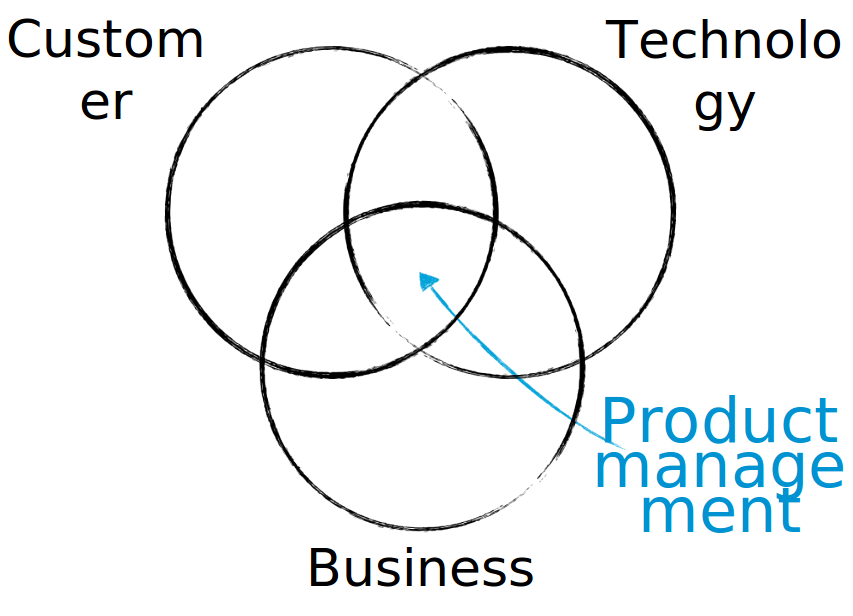

Practical Product Development when you're not Dave Morin
stan,damien@nitrogr.am

The role of a product manager is to discover a product that is valuable, usable and feasible
Marty Cagan
Fact : In the real world, most companies do too much development and spend too much money too early
Fred Destin
Don’t fail fast. Learn fast.
Tom Chi
People think focus means saying yes to the thing you’ve got to focus on.
But that’s not what it means at all. It means saying no to the hundred other good ideas...
Steve Jobs
Product Development in the Literature
- Vision
- Prototyping
- Roadmapping
- Usability Testing
- Customer Interviews
- A/B Testing
- Actionable Metrics
- ...
The Reality of your Startup
- Limited Money
(No Money at All)
- Limited Team
(No One at All)
- Limited Customer
(No Customer at All)
"The closest thing you'll get to teleportation"
Building Teleportd (The App)
2 Founders / 2-3 Months
-
Feedback
TestFlight feedback is probably biased!
-
Team
Small, Efficient, Driven
Pre-Launch Equation:
No Customer + No Usage = No Problem
-
Focus
Total & Absolute, driven by Vision
-
Gmail, git
Growing Teleportd (The App)
2 Founders / 3 Months
-
Feedback
Users "just checking out" (30-40k of them)
No Traction <=> No Feedback
-
Team
/!\ Violent communication shifts from growth to product
-
Focus
Move along if it does not go Supernova
-
Gmail, git
Teleportd API & Capsules
2 Founders + 2 Tech / 6 Months
-
Feedback
2 Employes -> 2 new PoVs
-
Team
Communication Formalizes
But Cus Dev Lacking
-
Focus
B2B Feedback loops are longer!
Free Cycles Theorem:
All free cycles in a small team will eventually be consumed
-
Gmail, Github, Paper(SUM)
Feature Limbo & Focus Experiment
How would I feel if a new startup was to launch with subset X of my features for subset Y of my customers
Nitrogram v0
2 Founders + 2 Tech + 1 Biz + 1 Content / 3 Months
-
Feedback
Do they Pay with $$$?
-
Team
Running 2 products is bad! Split-Brain
-
Focus
Product is slow and fails - Need to scale up!
-
Trello (SUM), Drive (Important Numbers)
Focus 100% of the Team on Nitrogram
Nitrogram v1
2 Founders + 2 Tech + 1 Biz + 1 Growth + 1 Content / 3 Months
-
Feedback
Do they keep paying?
-
Team
Biz sells v0 - Tech builds v1
-
Focus
Invested time in a proper backend + proper design
Specification was EZ!
-
Daily Tech Emails, Balsamiq
Focus 100% of the Team on 1 Feature
Even on 1 platform, we were doing too much.
Nitrogram => Analytics
2 Founders + 2 Tech + 2 Biz + 1 Growth + 1 Content / 3 Months
-
Feedback
Too many features, very complex UI,
addressing too many customers,
who started complaining...
-
Team
Customer interviews
(Know how here)
-
Focus
Do one thing well. Remove the others.
-
Skype and meetings!
Focus 100% of the Team on Metrics
Finally the traditional startup stuff!
Nitrogram Analytics Only
2 Founders + 3 Tech + 2 Biz + 1 Growth + 1 Content / 3 Months
-
Feedback
Our customers behavior
-
Team
Metrics and quality driven
-
Focus
In-app experience: activation, retention, revenues,
Streamline operations
-
Mixpanel